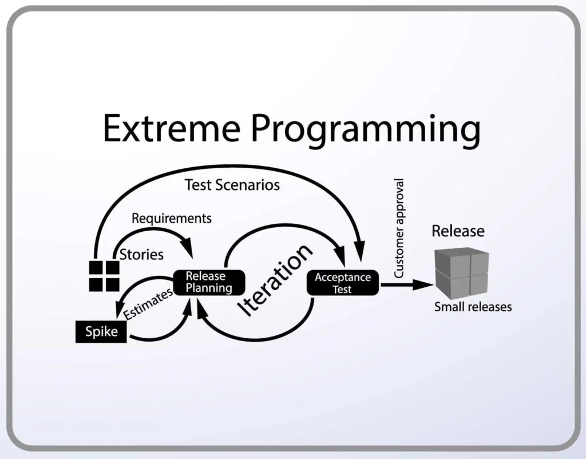

Extreme Programming (XP) on Agile’i metoodika üks konkreetsemaid vorme, mis keskendub tarkvara kvaliteedi ja meeskonnatöö tõhustamisele. XP on välja töötatud olukordadesse, kus tarkvara nõuded muutuvad kiiresti või on raskesti määratletavad. Selle metoodika raames kasutatakse mitmeid spetsiifilisi praktikaid, nagu paarisprogrammeerimine (kaks arendajat töötavad ühe arvuti taga), testimine enne koodi kirjutamist , pidev integratsioon, lihtne disain ja kliendi aktiivne kaasamine kogu arendusprotsessi jooksul. XP rõhutab tugevalt kommunikatsiooni, julgust ja austust meeskonnas ning on suunatud tarkvara loomisele, mis on kvaliteetne, hästi testitud ja kohandatav.
| Positiivsed küljed | Negatiivsed küljed |
|---|---|
| Parem koodikvaliteet | Suur ajakulu |
| Kiire reageerimine muutustele | Ei sobi suurtele projektidele |
| Ärimuudatused | Klient peab olema pidevalt kaasatud |
| Vähem vigu | Vajab kogenud tiimi |